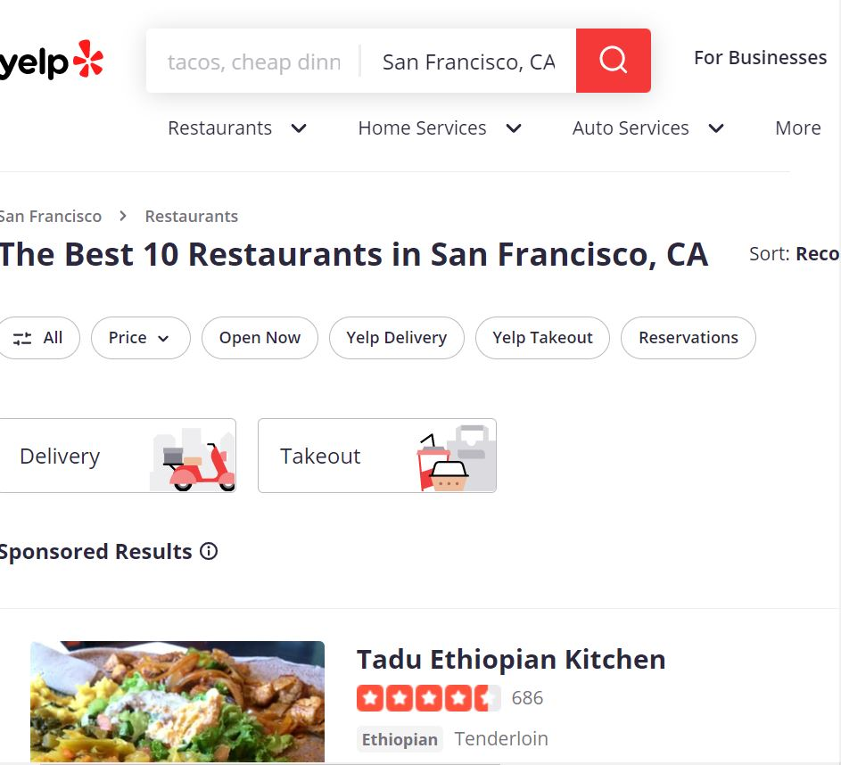
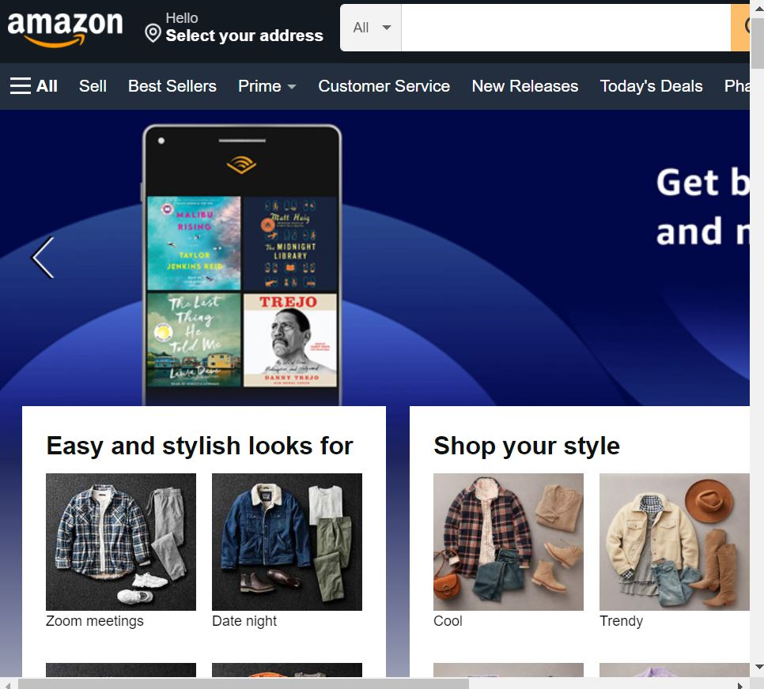
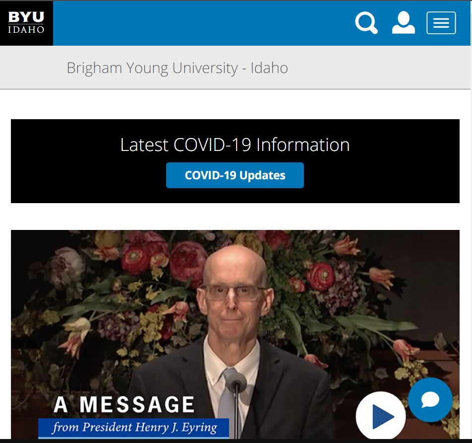

Hick's Law
Yelp I choose the Yelp website since it is a great example of Hick's Law because it allows the user to sort making it easier to choose what they want from hundreds of options that are available on the website.
Rule of Thirds
Amazon I choose the Amazon website since it is a great example of Rule of Thirds because it communicates visually by providing images for every product.
Fitt's Law
BYU-Idaho I choose the BYU-Idaho website since it is a great example of Fitt's Law because the buttons displayed on the home page are proportional to how many times they're accessed by the user. And the butons can easily be spotted.
.